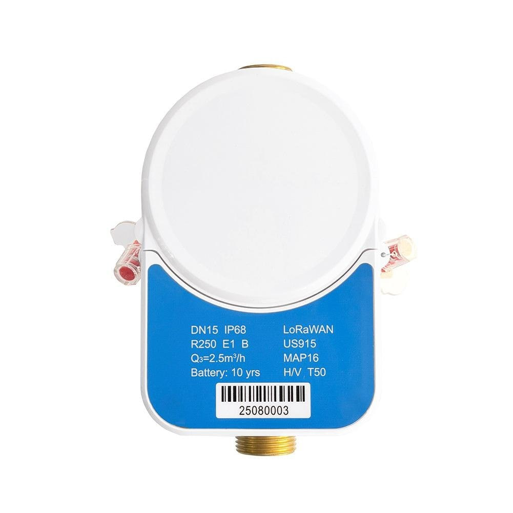

PCB & circuit design
Altium Designer · EasyEDA · KiCad · Proteus · DipTrace · Analog & digital circuits
HARDWARE ENGINEER · PRODUCT DEVELOPER
I design the electronics behind connected products — from multilayer PCBs and embedded firmware to smart meters, tracking systems and industrial communication.

01 / ULTRASONIC02 / LOW POWER03 / SMART METERING01 / SELECTED WORK
From utility infrastructure to wearable technology.
Explore the hardware, the thinking and the details.
02 / THE INTERACTIVE LAB
Three systems. Real principles.
Explore what happens between input and output.
01 / FLOW INTEGRATION
A small glimpse into smart metering. Change the flow rate and watch the virtual meter accumulate volume over time.
Illustrative simulation · No hardware connection.
This demonstrates volume integration, not ultrasonic sensing accuracy.
Pauses automatically when you leave this tab.
02 / LIGHT CARRIES THE DATA
Align the optical head, request an identity, negotiate a baud rate, and read an energy register. Watch each message travel between reader and meter.
IEC 62056-21 Mode C readout illustration. Messages use 7E1. Animation timing is slowed for learning; this is not a hardware driver or a conformance test.
About IEC 62056-21 ↗300 baud · 7E1
03 / SAME DATA. DIFFERENT SPEED.
Send the same payload over three ideal Ethernet links. See how 10BASE-T, 100BASE-TX and 1000BASE-T compare, including the time taken by frame overhead.
Full duplex, no congestion. 1 MB = 1,000,000 bytes. Untagged frames: up to 1500 payload bytes + 38 byte-times for headers, FCS, preamble and interframe gap. This model excludes IP/TCP, acknowledgements, propagation and disk delays. It does not test your internet.
Progress pauses when you switch Lab tabs or leave the browser tab.
03 / BEHIND THE BOARDS
Hardware design, embedded development and the practical work of bringing a product to life.
A hardware design engineer focused on PCB layout, analog and digital circuit design, and connected electronics. My work spans smart metering, tracking systems and industrial hardware.
I work across the product lifecycle: schematics, component selection, board layout, firmware integration and manufacturing readiness.
Read my full résumé ↗Altium Designer · EasyEDA · KiCad · Proteus · DipTrace · Analog & digital circuits
C · C++ · Legacy assembly · STM32 · Low-power hardware · Sensor integration
Ethernet · CAN FD · Optical interfaces · LTE / GSM · LoRa / LoRaWAN
Quartus · ModelSIM · Ansys HFSS · LabVIEW · Linux · GitHub · SQL / HeidiSQL
04 / EXPERIENCE
Product development and hardware design
in Addis Ababa, Ethiopia.
EDUCATION / 2021–2025
Addis Ababa Institute of Technology (AAiT)
B.Sc. in Microelectronics
School of Electrical and Computer Engineering
CONTINUED LEARNING
05 / LET’S CONNECT
Open to hardware design, embedded systems and product development opportunities.
ezra.mohammed1@gmail.com